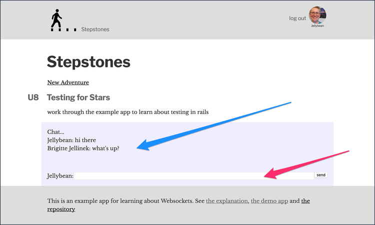
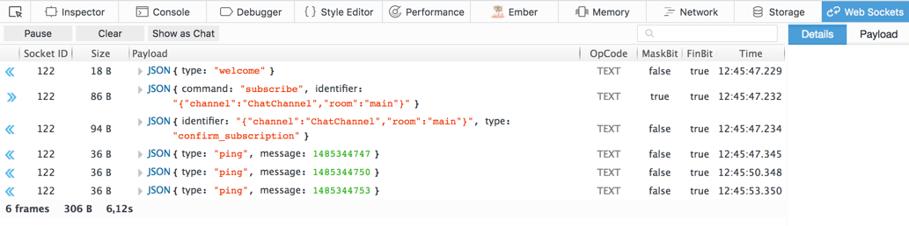
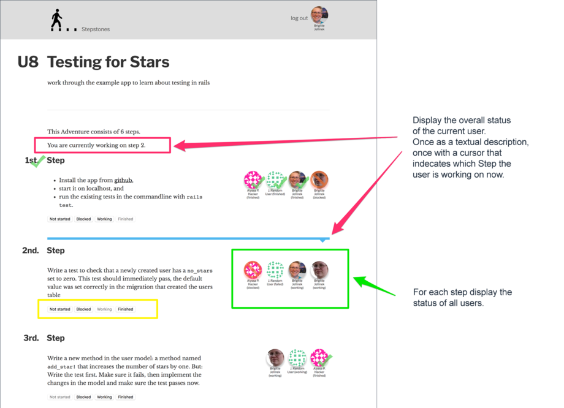
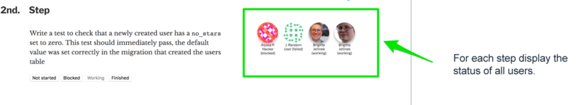

Rails Websockets
While HTTP only allows requests from the client sent to the server, websockets offer a permanent connection between client and server. With Actioncable you can use websockets for publish-subscribe communication.
By referring to this guide, you will be able to:
- Build a chat app in your webapp
- Incorporate "server push" functionality in your app
TBD
1 Websockets
Websockets are built on top of HTTP and HTTPS:
- they reuse the default ports 80 and 443
- they start out as a normal HTTP request
- they reuse cookies
but after the initial request, a websocket turns into a permanent connection between the server and the client.
GET /chat HTTP/1.1 Host: server.example.com Upgrade: websocket Connection: Upgrade Sec-WebSocket-Key: dGhlIHNhbXBsZSBub25jZQ== Origin: http://example.com Sec-WebSocket-Protocol: chat, superchat Sec-WebSocket-Version: 13 HTTP/1.1 101 Switching Protocols Upgrade: websocket Connection: Upgrade Sec-WebSocket-Accept: s3pPLMBiTxaQ9kYGzzhZRbK+xOo= Sec-WebSocket-Protocol: chat
Both the client and the server can send messages across the websocket at any time. Both the client and the server should be able to handle incoming messages at any time.
2 Publish-Subscribe
In Rails we have to distinguish three concepts:
- The websocket connection deals with authenticating a user
- see
app/channels/application_cable/connection.rb - see
app/assets/javascripts/cabel.js
- see
- A channel
- see
app/channels/*_channel.rb - see
app/assets/javascripts/channels/*.js
- see
- A stream inside a channel
- inside each channel streams are identified by a string
In our example app we will be using:
- a ChatChannel with one stream,
- the stream is identified by
room: main
- the stream is identified by
- an AdventureChannel with one stream per adventure, for example
- a stream identified by
url_path: /adventures/1 - a stream identified by
url_path: /adventures/2 - a stream identified by
url_path: /adventures/3
- a stream identified by
3 Chat Example
In our example app several users should be able to chat with each other, no matter which page of the app they are currently viewing.

We will build the app starting from the client side:
3.1 Client connects and subscribes
The javascript concerning websockets is stored in the
file app/assets/javascripts/cabel.js which was created
by rails. It should look like this:
//= require action_cable
//= require_self
//= require_tree ./channels
(function() {
this.App || (this.App = {});
App.cable = ActionCable.createConsumer();
}).call(this);
and which in turn includes the folder app/assets/javascripts/channels
where we will store our own javascript.
To connect each user to the chat channel, we add a new file
app/assets/javascripts/channels/chat.js:
App.chatChannel = App.cable.subscriptions.create({
channel: 'ChatChannel',
room: 'main'
}
This Javascript code also depends on one meta-tag being set in the webpage:
<meta name="action-cable-url" content="/cable" />
Do not write this by hand, use the rails helper in the
file app/views/layouts/application.html.erb:
<%= action_cable_meta_tag %>
Now the client tries to connect to the websocket at URL /cable
and then subscribe to the chat channel.
If you open your app in the browser now, you should
see an error in the developer tools console:
WebSocket connection to 'ws://localhost:3000/cable' failed: Error during WebSocket handshake: Unexpected response code: 500
So the client is trying to connect, but it does not work yet.
3.2 Server accepts and Authentication
The server side code is stored in the folder app/channels. We first
take a look at app/channels/application_cable/connection.rb, which was
created by rails:
module ApplicationCable class Connection < ActionCable::Connection::Base end end
Remember that the server side code concerning websocket is not
called by a controller. So even if we already built authentication
into our app, and added code for current_user to application_controller.rb,
the current_user will not be available here in the ApplicationCable.
But we do have access to cookies in Actioncable:
module ApplicationCable
class Connection < ActionCable::Connection::Base
identified_by :current_user # creates a instance variable
def connect
Rails.logger.warn("this is the info I read from the cookie:")
Rails.logger.warn(cookies.encrypted[Rails.application.config.session_options[:key]])
self.current_user = User.find(3)
end
def disconnect
# Any cleanup work needed when the cable connection is cut.
end
end
end
After adding this code the browser should be able to connect to the websocket. In Firefox with the extension Websocket Monitor you can see the messages sent across the websocket in a separate tab:

You can see that there is more going on than just the subscription that we initiated from the client side.
On the server side you will see the connection in the log file:
Started GET "/cable" for ::1 at 2017-01-25 17:45:09 +0100
Started GET "/cable/" [WebSocket] for ::1 at 2017-01-25 17:45:09 +0100
Successfully upgraded to WebSocket (REQUEST_METHOD: GET, HTTP_CONNECTION: keep-alive, Upgrade, HTTP_UPGRADE: websocket)
this is the info I read from the cookie:
{"session_id"=>"b8ee74d5afe32d5", "_csrf_token"=>"9mBRsEoGnRnkkW6", "user_id"=>"3"}
We successfully decoded the session data from the encrypted cookie, you can see
that the user_id is 3 in this case. We can use this to set the current_user correctly:
module ApplicationCable
class Connection < ActionCable::Connection::Base
identified_by :current_user # creates a instance variable
def connect
session_from_cookie = cookies.encrypted[Rails.application.config.session_options[:key]]
user_id = session_from_cookie['user_id']
reject_unauthorized_connection if user_id.nil?
self.current_user = User.find(user_id)
Rails.logger.warn("connection for user #{current_user}")
reject_unauthorized_connection if current_user.nil?
end
def disconnect
# Any cleanup work needed when the cable connection is cut.
end
end
end
After this, a user that has logged in to the rails app is automatically also logged in to the websocket, as you can see in the log file:
Started GET "/cable" for ::1 at 2017-01-25 17:54:51 +0100 Started GET "/cable/" [WebSocket] for ::1 at 2017-01-25 17:54:51 +0100 Successfully upgraded to WebSocket (REQUEST_METHOD: GET, HTTP_CONNECTION: keep-alive, Upgrade, HTTP_UPGRADE: websocket) User Load (0.3ms) SELECT "users".* FROM "users" WHERE "users"."id" = $1 LIMIT $2 [["id", 3], ["LIMIT", 1]] connection for user Brigitte Jellinek Registered connection (Z2lkOi8vc3RlcHN0b25lcy9Vc2VyLzM) ChatChannel is transmitting the subscription confirmation ChatChannel is streaming from chat_main
Now the server is ready to receive data from this client and send data to this client.
3.3 Client sends data
To implement the chat we can use the already existing HTML in application.html.erb:
<section id="chat" class="holder" style="display:none;">
<div id="output">
<p>Chat...</p>
</div>
<div id="input">
<span><%= current_user %>: </span>
<input name="chat" type="text">
<input type="button" value="send">
</div>
</section>
We just have to make it visible as soon as we have a websocket connection.
We change app/assets/javascripts/channels/chat.js, adding a second
argument to subscriptions.create: an object that holds a connected-function:
// create(channelName, mixin)
App.chatChannel = App.cable.subscriptions.create({
channel: 'ChatChannel',
room: 'main'},
{
connected: function() {
$('#chat').show();
}
}
);
If a user types something into the chat-input field and presses enter or the send button, we want the text to be sent across the websocket:
$(function() {
function send_chat() {
var text = $('#input input[name=chat]').val();
$('#input input[name=chat]').val('');
App.chatChannel.send({ body: text });
}
$('#input input[name=chat]').on('keypress',function (e) {
if (e.which == 13 || e.keyCode == 13) {
send_chat();
}
});
$('#input input[type=button]').on('click', send_chat);
});
If you type in 'Hello' and send it, you can see the message being sent in the websocket tab of firefox developer tools:

3.4 Server receives data
Right now the server does not know how to handle the incoming data, in the log file you will read:
Unable to process ChatChannel#receive({"body"=>"hello"})
We implement receive in app/channels/chat_channel.rb:
class ChatChannel < ApplicationCable::Channel
# Called when the consumer has successfully
# become a subscriber of this channel.
def subscribed
stream_from "chat_#{params[:room]}"
end
def receive(data)
data["user"] = current_user.full_name
data["time"] = Time.now.strftime('%H:%M')
ActionCable.server.broadcast("chat_#{params[:room]}", data)
end
end
Here we take the data coming in from the client and add some more: the name of the current user and the current time on the server.
The broadcast method will send the new data to
all users subscribed to the chat-channel, even
the user who originally sent it.
3.5 Client recieves data
In `app/assets/javascripts/channels/chat.js, where
we made the subscription, we add a function to handle
the received data:
App.chatChannel = App.cable.subscriptions.create({
channel: 'ChatChannel',
room: 'main'},
{
received: function(data) {
$("#output").append(
'<p>' + data['user'] + ': ' + data['body'] + '</p>'
);
}
}
);
4 Progress Example
For the second example the communication structure is a bit more complex: All the users in one adventure should see each other progress through the steps.

The page displays the adventure and the three steps it consists of.
The currently logged in user is 'Brigitte Jellinek'. Her progress is described at the top of the page (purple box) as "You are currently working on step 2.". A blue cursor just above step 2 also indicates this.
At every step we can see the status of all users. For example at the 2nd step, in the green box, we can see the status of four users. We can see that Alyssa P. Hacker is blocked.
Inside the yellow box we find the interface the current user can use to change their status at step 2.
We will use websockets to communicate changes to all users. So if Alyssa changes her status from blocked to finished, the server will send websocket messages to all the other users currently viewing the page, and their display will change accordingly.
Contrast this to a classic web app built with HTTP requests, where you would need to reload the page to get the new status.
4.1 Client subscribes
There is no need to change anything in app/assets/javascripts/cabel.js. We
add another file to the channels folder app/assets/javascripts/channels/adventure.js:
App.cable.subscriptions.create({ channel: "AdventureChannel" })
In channels/chat.js we also set a room when creating the subscription,
and we used the same room for all users. This time we want to treat users
who are working on different adventures differently.
One simple way of doing this is to supply the URL of the current page as a parameter when creating the subscription:
App.adventureChannel = App.cable.subscriptions.create({
channel: "AdventureChannel",
url_path: document.location.pathname
});
The path is communicated via websocket:

4.2 Server accepts
On the server side we create a new file app/channels/adventure_channel.rb:
class AdventureChannel < ApplicationCable::Channel
def subscribed
stream_from '/adventures/4' # TODO: read param url_path
end
end
We only want to send out messages to users who are viewing on of the adventure-pages, not to people who are on the homepage or anywhere else.
So we analyze the url_path parameter we recive from the client,
and only stream_from if the path fits:
def subscribed
if params[:url_path] =~ %r{^/adventures/\d+$}
stream_from params[:url_path]
end
end
4.3 Client recieves data
To help with debugging the channel while we are building it, we will copy over any data recived by the client to the chat window:
App.adventureChannel = App.cable.subscriptions.create({
channel: "AdventureChannel",
url_path: document.location.pathname
},
{
received: function(data) {
$("#output").append('<p>' + data.description + '</p>');
}
});
4.4 Server sends data if status changes
Every time a user changes their status we want the server
to send out messages. The model where the status is stored
is Step. ActiveRecord supplies hooks for callbacks we can use here:
class Step < ApplicationRecord
delegate :url_helpers, to: 'Rails.application.routes'
after_create_commit :notify_adventure_channel
after_update_commit :notify_adventure_channel
def notify_adventure_channel
ActionCable.server.broadcast(
url_helpers.adventure_path(stepstone.adventure),
description: describe_new_state
)
end
The ActionCable.server.broadcast methods takes one string argument
for identifying the stream to broadcast on. We used the
path to the adventure page, for example "/adventure/3". Here
we use a helper to contruct this string, we could also have
done it directly with "/adventure/#{stepstone.adventure_id}".
With these pieces in place a change in status should already appear in the chat window.
4.5 Client recieves data: partial as html
The display of all the users status involves a lot of html and additional resources.

There is already a separate partial to handle this, it is
called in the adventures/show.html.erb view repeatedly:
<% @stepstones.each_with_index do |stepstone, i| %>
<div id="step_<%= i %>">
<h2>
<span class="number"><%= (i + 1).ordinalize %>.</span> Step
</h2>
...
<article>
....
<div id="step_<%= i %>_show_status" class="step_show_status">
<%= render 'stepstones/show_status', stepstone: stepstone, i: i %>
</div>
</article>
</div>
<% end %>
We can reuse the stepstones/show_status partial on the server side,
when we send the message to the websocket. And we can reuse the
div with id step_3 on the client side, when we incorpoarte the
recieved html into the page.
We will add two new keys to the message, which now looks like this:
{
"description": "Alyssa P. Hacker is now blocked at the 2nd step.",
"selector": "#step_1_show_status",
"html" : "<div class=\"user blocked\"><span><img...> ....</div>\n"
}
On the server we add another key/value pair to message:
def notify_adventure_channel
ActionCable.server.broadcast(
url_helpers.adventure_path(stepstone.adventure),
description: describe_new_state,
selector: "#step_#{i}_show_status",
html:
ApplicationController.renderer.render(
partial: 'stepstones/show_status',
locals: { stepstone: stepstone, i: i }
)
)
end
on the client we just use jQuery to replace the html inside the div:
received: function(data) {
$(data.selector).html(data.html);
$("#output").append('<p>' + data.description + '</p>');
}
Now the status-display with all the users should work!
5 Deployment
6 See Also
- RFC 6455
- O'Riordan(2016) Rails ActionCable — The good and bad parts - a good overview of the uses and limitation of ActionCable